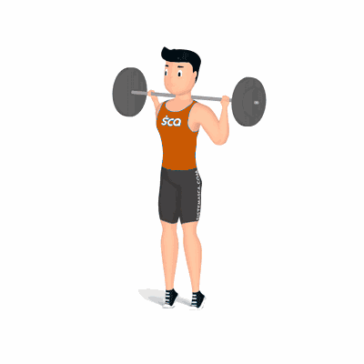

Elevação de Panturrilha com Barra

Exercício para fortalecimento e hipertrofia dos músculos das panturrilhas. Realiza na posição em pé, exige do praticante músculos auxiliares fortalecidos, tais como: abdominais e lombares.
Ficha Técnica
Tipo: Musculação
Grupo Muscular: Perna
Aparelho: Nenhum
Músculos: Nenhum
Como realizar
- Apoie a barra na região do trapézio;
- Pés ligeiramente separados;
- Coluna reta e abdome contraído;
- Empurre o corpo para cima, elevando os calcanhares do solo;
- Concentre a força nos músculos das panturrilhas e retorne à posição inicial de forma controlada;
- Repita os movimentos, conforme o número de repetições orientado pelo professor.
 RC STORE
RC STORE